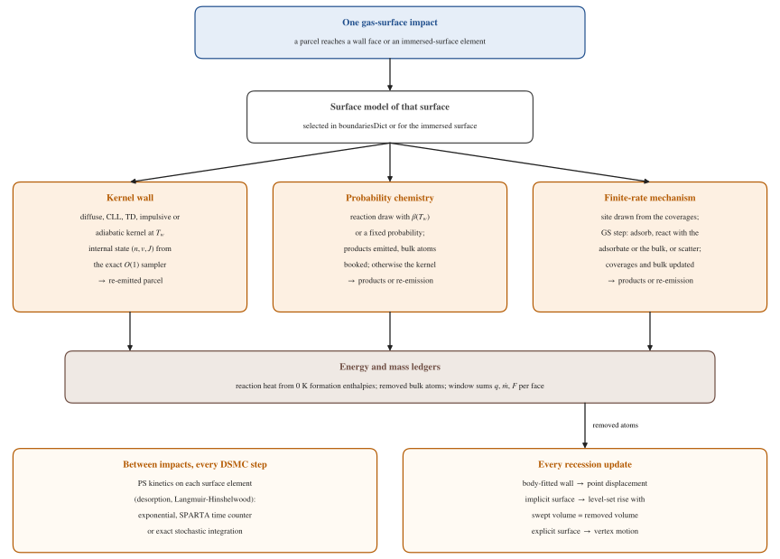

Wall and inflow models
The present section documents the physical models attached to
domain boundaries. Four families are distinguished — specular,
diffuse, Cercignani-Lampis-Lord, and rovibronic-aware —
together with the accommodation coefficients and the treatment of
the internal degrees of freedom at reflection. The second part
describes the gas-surface interaction framework: per-face wall
temperature, probability-based and finite-rate surface chemistry,
the scattering kernels of reaction products, reaction heats,
receding body-fitted and immersed surfaces, and the conjugate solid
of dsmcFoamAblation. Its verification is collected in
Gas-surface interaction verification.
Specular reflection
A specular wall reverses the velocity component normal to the patch face and leaves the tangential components unchanged,
with \(\hat{\mathbf{n}}\) the outward face normal. The internal state of the parcel is unaffected, and no momentum, energy, or mass is exchanged with the wall. Specular walls are primarily of use in symmetry planes, periodic surrogates, and free-molecular verification.
Fully diffuse reflection
The Maxwellian diffuse wall thermalises the reflected parcel with the wall. After reflection, the velocity is drawn from the half-Maxwellian at the wall temperature \(T_w\),
with \(\mathbf{v}_w\) the (usually zero) wall velocity and \(\hat{\mathbf{n}}_w\) the inward-pointing face normal. In the continuous-internal-energy implementation the internal energy is redrawn from a Boltzmann distribution at \(T_w\); the rovibronic-aware variant discussed below redraws the quantum state \((n, v, J)\) instead.
Mixed diffuse / specular
The Maxwell mixed model introduces an accommodation coefficient
\(\alpha \in [0, 1]\): a fraction \(\alpha\) of incoming
parcels reflect diffusely, the remainder specularly. In the
implemented variant dsmcMixedDiffuseSpecularWallPatch,
\(\alpha\) is a single scalar; the field variant
dsmcMixedDiffuseSpecularWallFieldPatch allows \(\alpha\)
and \(T_w\) to vary patch face by patch face.
Cercignani-Lampis-Lord (CLL) scattering
The CLL model [Lord1991wa] offers an anisotropic alternative to the fully-diffuse Maxwellian kernel, with two accommodation coefficients \(\alpha_n\) and \(\alpha_t\) for the normal and tangential components of the momentum. Writing \(V_n, V_t\) for the normal and tangential velocity magnitudes scaled by \(\sqrt{2 k_B T_w / m}\), the CLL kernel samples post-collision \(V_n', V_t'\) from
with \(V_r, V_r'\) Maxwell-Boltzmann-distributed thermal speeds and \(\theta\) uniform on \([0, 2\pi)\). The two limits \(\alpha_n = \alpha_t = 0\) (specular) and \(\alpha_n = \alpha_t = 1\) (fully diffuse) are recovered from the same kernel.
The kernel acts on the velocity relative to the wall and the wall
velocity is added back, so that a moving CLL wall accommodates the
tangential momentum by \(\sigma_t\) (the former code, and the
translate option of SPARTA, accommodated a moving wall too
strongly; Wall models and surface processes).
The CLL wall also accepts per-mode internal coefficients.
Per-mode accommodation, radiative equilibrium, outgassing and pumps
dsmcAccommodationWallPatch is a Maxwell wall with a separate
coefficient for every energy mode: \(\sigma\) is the diffuse
fraction, \(\alpha_T\) gives thermal re-emission within a
diffuse event (otherwise a cosine-law direction at the same speed
relative to the wall), and \(\alpha_R\), \(\alpha_V\),
\(\alpha_E\) act per internal mode (\(\alpha_E\) is the
surface-quenching probability of excited states), optionally per
species. Modes redrawn together are drawn jointly given the kept
ones, so every draw leaves the equilibrium at \(T_w\) invariant.
dsmcRadiativeEquilibriumWallPatch solves
\(\varepsilon\sigma(T_w^4 - T_{bg}^4) = q\) per face from the
relaxed sampled heat flux (relaxing \(q\) rather than
\(T_w\) avoids a Jensen bias); dsmcOutgassingWallPatch
emits prescribed species fluxes (optionally with a blowing velocity);
dsmcPumpWallPatch captures impinging parcels with a constant
probability, a pumping speed or a PI-controlled probability that
holds a target wall pressure. Verification:
Wall models and surface processes.
Rovibronic-aware wall: dsmcMixedDiffuseSpecularWallRotPatch
The rovibronic-aware wall is the only boundary class that samples on the quantum-state space at reflection. It behaves like the Maxwell mixed model for the velocity, but replaces the internal- energy redistribution by a Boltzmann draw over the species’ rovibronic levels:
with \(T_w\) the wall temperature. The partition function in the denominator is the full internal partition function of Rovibronic level structure. This is the right choice for flows in which the internal populations impinging on the wall carry information (radiation, catalysis, non-equilibrium boundary layers) and must be equilibrated with the wall on reflection.
Free-stream inflow
The free-stream inflow patch injects parcels drawn from a Maxwellian distribution at prescribed density \(n_\infty\), temperature \(T_\infty\), and drift velocity \(\mathbf{v}_\infty\). The number of particles entering the domain over a patch face of area \(A_f\) during \(\Delta t\) follows from the half-range flux integral:
with \(s = (\mathbf{v}_\infty\cdot\hat{\mathbf{n}}_w) / \sqrt{2 k_B T_\infty/m}\) the speed ratio. Sampled velocities follow the acceptance-rejection construction of Bird.
Chapman-Enskog inflow
The dsmcChapmanEnskogFreeStreamInflowPatch extends the
Maxwellian inflow with a first-order Chapman-Enskog correction
accounting for a non-zero stress and heat flux at the patch
face,
with \(\mathbf{c}\) the peculiar velocity in units of the most-probable speed, and \(\tilde{\mathbf{q}}, \tilde{\boldsymbol{\tau}}\) the scaled heat-flux and stress tensors. This is the natural inflow when coupling DSMC to a continuum upstream, where non-zero Navier-Stokes-like first-order moments characterise the state of the gas.
Pressure and mass-flow inlets
Pressure- and mass-flow-driven inlets
(dsmcWangPressureInlet, dsmcLiouFangPressureInlet,
dsmcMassFlowRateInlet) apply Maxwellian sampling at an
inferred density chosen so that the desired pressure or the
desired mass flow rate is respected in the long-time average.
They are the natural choice when the upstream reservoir is
better characterised through \(p_0\) or \(\dot{m}\)
than through \(n_\infty\).
Particle deletion
Parcels that reach a dsmcDeletionPatch are removed from the
simulation. The patch supports either the allSpecies switch
or a typeIds list, so that outflow patches may be made
species-selective when required.
Cyclic boundaries
The dsmcCyclicBoundaries block in boundariesDict supports
periodic pairing. The
dsmcReflectiveParticleMembranePatch variant reflects a
user-specified fraction of incoming parcels back into the domain
while letting the rest pass through; this is the mechanism used,
for instance, to model permeable membranes in micro-nano-flow
applications.
Gas-surface interaction framework
Beyond the passive scattering kernels above, the solver provides a gas-surface interaction (GSI) framework for thermal-protection, catalysis and demise problems. It has three kinds of reacting surface, all sharing the per-face wall temperature, the chemical energy ledger and the scattering kernels described below:
Surface |
Chemistry |
Geometry |
|---|---|---|
|
probability mode: a list of per-impact surface reactions |
body-fitted wall; the ablating wall recedes under
|
|
finite-rate engine (site sets, coverages, GS and PS reactions), native or SPARTA mechanism |
body-fitted wall; recedes from its bulk ledger under
|
immersed surface ( |
probability mode or finite-rate engine, per cut cell |
implicit or explicit surface on the fixed DSMC mesh |
The verification of every item is collected in Gas-surface interaction verification; the input keywords are listed in Input Reference. How the surfaces connect to the gas and to the conjugate solid is shown in Solvers and coupling.


One gas-surface impact through the three kinds of surface model, the energy and mass ledgers, the surface kinetics between impacts and the recession update.
Per-face wall temperature
Every wall whose kernel re-emits at a wall temperature takes it per
face from the wall base class dsmcPatchBoundary, through
wallTemperatureModel:
uniform(default): \(T_f\) =temperature;radiativeEquilibrium: per face, \(\varepsilon\sigma(T_f^4 - T_{bg}^4) = q_f\), with the face energy accumulated overupdateIntervalsteps and blended into a running flux withrelaxationFactor(the algorithm of the dedicated radiative-equilibrium wall);coupled: \(T_f\) is set by a coupled solver (the conjugate solid ofdsmcFoamAblation).
On the reactive walls the face temperature also sets the reaction
probabilities, the sticking and the surface rates of that face, and
the products leave at \(T_f\). The heat of reaction is not
added to the gas energy flux \(q_{BF}\): it is deposited in a
separate chemical-energy ledger \(q_{chem}\) (the analogue of
SPARTA’s echem), and the heat the wall receives is
\(q_{BF} + q_{chem}\) (SPARTA’s etot). Parcels injected by
the wall (secondary products, desorbed atoms, outgassing) are
measured as leaving the wall. The face temperatures, the ledgers and
the coupling window are written per processor at every write time
and adopted on restart. In uniform mode the per-impact cost is one
face lookup and three integer tests.
Verification: B1: per-face wall temperature.
Probability-mode surface reactions
A probability-mode surface reaction has a dimensionless per-impact probability of generalised Arrhenius form,
with \(T_a = E_a/R\). On each impact the probabilities of the
reactions of the impinging species are summed; with probability
\(\min(\sum_i \beta_i, 1)\) one reaction is selected in
proportion to \(\beta_i\), the parcel leaves as the product (a
recombination partner or an absorbed parcel is removed, a secondary
product is a new parcel at the impact point), and nCConsumed
solid atoms per real molecule are debited from the per-face carbon
ledger. The classes are
srFiniteRate— the Arrhenius form above (oxidation, nitridation, finite-rate recombination);srRecombination— catalytic recombination with a constantgamma, an Arrhenius \(\gamma(T_w)\) (gamma0/EaorgammaA/Ta) or a tabulatedgammaTable; the recombination energy \(E_{rec}\) is split, a fraction \(\beta_{acc}\) to the wall and the rest to the nascent molecule as kinetic energy;srAbsorption— the parcel is absorbed (electrons, cryopanels, getters);srNeutralisation— ion neutralisation X+ → X, releasing \(\mathrm{IP}(X) - \phi\) split by \(\beta_{acc}\).
The carbon-ablation set comprises the Park oxidation O + C(s) → CO, \(\beta = 0.63\,e^{-1160/T_w}\) [Park1976gsi]; O2 + C(s) → CO + O, \(\beta = 0.5\); CO2 + C(s) → 2CO, \(\beta = 0.9\) [ZhluktovAbe1999]; and nitridation N + C(s) → CN, \(\beta = 0.3\) by default [ParkBogdanoff2006_gsi] or the low-rate Titan form \(\beta = 0.0791\,e^{-5663/T_w}\) [Zhang2012_gsi] [Helber2017_gsi]. Material \(\gamma(T_w)\) correlations are provided for RCC, SiO2 and SiC after Stewart [Stewart1997] and Scott [Scott1983]. Verification: Probability-based catalysis and carbon ablation.
Finite-rate gas-surface engine
The finite-rate engine follows SPARTA’s surf_react adsorb
[SPARTA_gsi] and the framework of Swaminathan Gopalan, Borner and
Stephani [SG25_gsi]. A mechanism (surfaceMechanism, no state)
defines site sets with a site density \(\Phi\), adsorbates
X(s) on a site set, bulk species X(b), catalysts X(sc), the options
and the reactions. It is written natively in
system/surfaceChemReactDict (surfaceMechanisms) or imported
verbatim from SPARTA GS and PS files. A surface state
(surfaceState) holds, per element (a wall face, or a cut cell of
the immersed surface), the coverages \(\theta_a\), the real
and simulated site counts \(N_{sites} = \Phi A_e\) and
\(N_{sim} = \Phi A_e/W_e\), a rate cache recomputed only when the
element temperature changes, the bulk ledger and the tallies.
A gas-surface (GS) reaction starts with the impact of its gas reactant. Its probability is
with \(k(T) = A\,T^b e^{-E_a/T}\) and the surface-reactant
factor \(F_s = \prod_j C(n_j, s_j)/N_{sim}^{s_j}\)
(stoichiometry combinatorial, SPARTA) or
\(F_s = \prod_j \theta_j^{s_j}\) (power). The free-site
factor is Langmuir, \(S = \theta_E^\alpha\), or one of three
Kisliuk precursor forms (sparta, sg25, legacy). The rate
form converts a rate constant into a per-impact factor:
efficiency (\(\gamma = k\)), maxwellian
(\(\gamma = 4k\Phi^{\sum s}/\bar v\)) or perParticle
(\(\gamma = 2k\Phi^{\sum s}/|v_n|\)). With normalisation
sparta the channels of the impinging species are summed and scaled
by \(1/P_{tot}\) above 1; with sg25 an adsorption
probability is shared between the adsorption-mediated channels in
proportion to their weights. The selection is exactly gated: a
drawn channel whose surface reactants hold fewer molecules than it
consumes, or whose products need more free sites than exist, is
rejected and counted, so the engine never creates or destroys atoms
(SPARTA clamps negative counts at the next synchronisation instead).
With coverageUpdate sync the GS changes are applied every
nsync steps. The impinging parcel becomes the first gas product,
scattered by that product’s kernel; further products are new
parcels; a reaction without gas product removes the parcel. The cost
is O(1) per impact in the channels of the impinging species
(20-30 ns per impact). Verification:
B2: finite-rate gas-surface engine.
Pure-surface integration
Pure-surface (PS) reactions — desorption DS, Langmuir-Hinshelwood
LH2 and LH4, sublimation SB — have an event frequency per element
\(\nu_r = k\,N_{sim} F_s\), so that with power stoichiometry
the rate per site is \(R = k\prod_j\theta_j^{s_j}\). Every
nsync steps they are integrated over
\(h = n_{sync}\Delta t\) on the active elements only, with
psIntegrator:
exponential(default): exponential Euler in extent space, \(X = h\,\varphi_1(hM)\,R(\theta_0)\), with the Jacobian \(M\) written analytically in each PS class and \(\varphi_1\) from a Padé(6,6) exponential of the augmented matrix. It is exact for linear networks at any \(k\,\Delta t\); non-linear reactions take adaptive sub-steps (psSubStepTolerance,psMaxSubSteps). Per-element carries of every gas product emit whole parcels, so atoms are conserved exactly per element;timeCounter: SPARTA’s multiple time counters (SG25 Algorithm 2), with SPARTA’s frozen rates underspartaCompatibility;stochastic: the exact stochastic simulation algorithm (SG25 Algorithm 3 with the waiting time drawn before the event).
The keywords of the former coverage wall (Langmuir and Kisliuk sticking, Polanyi-Wigner desorption with lateral interactions, Eley-Rideal, collision-induced desorption, Langmuir-Hinshelwood) are translated at start into a built-in mechanism and run through the same engine. Verification: B3: pure-surface integration.
Wall kernels and the exact internal-state sampler
The default kernel of a reacting wall and the kernel of every
reaction product are run-time selected (scatterModel):
diffuse, specular, cll (with Lord’s partial
eccentricity [Lord1991wa] and per-mode internal accommodation),
td (thermal desorption with barrier, bond and
initenergy), impulsive (soft-sphere or tempvar speed,
\(\cos^p\) and \(\cos^q\) lobes about the specular
direction, step, double, intenergy) and adiabatic
(cosine-law direction at the conserved speed relative to the wall).
They follow the SPARTA sources, with discrete rovibronic levels in
place of SPARTA’s continuous internal energies.
Every equilibrium draw of a diatomic rovibronic state — initial fill,
inflow, diffuse re-emission, the conditional draws of the
accommodation walls and of the cll and td kernels — uses an
exact O(1) sampler. At temperature nodes
\(T_m = 10\,\mathrm{K}\times 1.15^m\) the code builds lazily a
Vose alias table of \(g_l e^{-(E_l - E_{min})/kT_m}\) per level
range (all allowed levels, one manifold, the rotational levels of one
vibronic state, the vibronic states of one \(J\)). A draw at
\(T \le T_m\) takes the alias column and accepts the level with
probability \(\exp[-(E_l - E_{min})(1/kT - 1/kT_m)] \le 1\), so
the accepted level is exactly Boltzmann at \(T\); the mean
acceptance is at least \(1.15^{-d/2}\). A two-temperature draw
gives \((n, v)\) at \(T_{vib}\) and \(J\) at
\(T_{rot}\). A draw costs 75-121 ns, 103-104
times less than the former rejection sampler
(internalStateSampler rejection keeps the latter for the gas
draws). Verification:
B4: scattering kernels and the exact internal-state sampler.
Reaction heat and chemistry-driven recession
Every GS and PS event releases at the wall
with the 0 K formation enthalpies on the DSMC energy zero: gas
neutrals from the frozen species database, an ion as its neutral
plus the ionisation potential, a bulk element 0 (graphite for
carbon), an adsorbate \(h_f(\text{gas}) - kE_a\) of its
desorption reaction (else its bindingEnergy), and a compound bulk
species from the material’s formationReference. The energy of
the gas parcels measured by the wall and \(\Delta E\) then close
the energy balance exactly. A heatOfReaction overrides the
computed value; reactionHeat none keeps only the given heats.
The bulk ledger times the mass of a bulk atom gives the solid mass
removed per face; \(\Delta = m/(\rho_s A_f)\) drives the wall
motion of dsmcFoamAblation (ablationRecession in
constant/dynamicMeshDict, with an accelerationFactor) or the
conjugate solid. Verification:
B5a: reaction heats and chemistry-driven recession.
Immersed ablating surfaces
The immersed surface lives on the fixed DSMC mesh, as in SPARTA:
implicit (
surfaceType implicit): values at the mesh points (initially the signed distance to the body, analytic or from an STL), the surface rebuilt cell by cell by marching squares (2-D) or marching tetrahedra (3-D, watertight on any polyhedral mesh);explicit (
surfaceType explicit): a closed STL clipped by every cell (Sutherland-Hodgman), receding vertex by vertex with a Huygens correction, and handed over to the implicit representation when its triangulation degrades.
Parcels are tested against the elements of the cell they cross (exact crossing during the move, no parcel enters the solid); the collision rate and the sampled densities use the flow volume of the cut cells. At each update the surface recedes monotonically by the removed volume (no cell ever loses gas), and one scale factor makes the swept volume equal the removed volume exactly. Both representations work on 2-D, 3-D and axisymmetric meshes, serial or parallel. Verification: Immersed ablating surface.
The chemistry of the immersed surface (dsmcImmersedChemistry)
runs in probability mode (a reactions list as on the catalytic
wall; the single-\(\gamma\) keywords are translated into one
srFiniteRate reaction) or in mechanism mode, the finite-rate
engine with the cut cells as elements. After every recession update
a cell whose surface area falls releases the corresponding fraction
of its adsorbates and carries to the neighbouring cells that gained
area, so atoms are conserved exactly. The surface temperature is
uniform, or per cut cell in radiative equilibrium. Vapour-pressure
sublimation (Clausius-Clapeyron \(p_{vap} = a\,e^{-b/T_w}\) and
the Hertz-Knudsen flux) and a global radiative equilibrium are also
available on the immersed surface. Verification:
B5b: surface chemistry on the immersed surface.
Multi-region conjugate solid
With constant/conjugateProperties, dsmcFoamAblation couples
its walls to one or more solid regions of the same case, on the gas
runTime but with their own physical clock. Every
couplingInterval DSMC steps the gas wall hands over the window
heat flux (incident minus re-emitted energy plus the chemical
energy) and, for a receding wall, the mass flux; a face-area-weighted
AMI maps them conservatively onto the solid faces (non-conformal
meshes allowed). The solid advances solidStepsPerWindow steps of
solidDeltaT of
on its moving mesh, with \(k(T)\) and \(c_p(T)\) any
Function1 of \(T\), re-radiation
\(k\,\partial T/\partial n = q - \varepsilon\sigma(T_w^4 -
T_{bg}^4)\) and Stefan melting
\(\rho L v = q - \varepsilon\sigma(T_m^4 - T_{bg}^4) -
k\,\partial T/\partial n\) at \(T_w = T_m\). The wall recedes on
both meshes (each gas wall point follows the solid surface point it
lies on) and the solid face temperatures return to the DSMC wall
(coupled model). With meltFilm the melt stays on the wall as
a lubrication film driven by the gas shear and pressure, capillarity
and a body force (or the deceleration in free flight); it refreezes
where the solid takes the heat and leaves as droplets at sharp edges
(Friedrich criterion), where the gas tears an accumulation off
(critical Weber number) or where it drips; the droplets move through
the gas with free-molecular drag and heating, radiate and evaporate.
The coupling runs in parallel (decomposePar -allRegions) and
restarts exactly. Verification:
Conjugate solid: conduction, melting, film and droplets and
B8: multi-region conjugate solid.
Production mechanisms
Two published mechanisms are provided as native mechanism files with in-repository Python oracles: the air-carbon ablation (ACA) model of Prata, Schwartzentruber and Minton [PR22_gsi] and the O-carbon model of Swaminathan-Gopalan et al. [SGC18_gsi]. The oracles reproduce the published model curves, and the mechanism files reproduce the oracles’ rate constants to 4.7e-10. The ACA spectator channels are not yet supported by the engine. Verification: B6: production surface mechanisms.
PATO loose coupling
The immersed surface exposes a file-based interface to PATO (the Porous-material Analysis Toolbox): the DSMC side exports the edge state in PATO’s \(B'\) boundary-condition table (\(p\), \(\rho_e u_e C_H\), \(h_r\), radiative flux) and imports the wall temperature, the recession and the blowing returned by PATO.
Note
The PATO coupling has been exercised against mock exchange files only; it should be regarded as a preview capability.
Planned
Note
(Not implemented yet.) The following extensions are planned and are not available in the current build:
QK gas-surface chemistry: state-resolved surface reaction thresholds on the rovibronic levels of the impinging molecule, barriers estimated with the UBI-QEP bond-order method, and the reverse processes constructed by detailed balance, as for the gas-phase QK model;
composite surfaces: several materials on one immersed surface with per-cell mass consistency, after Hong and Gallis [HongGallis2025_gsi] [Hong2024_gsi];
solid under the immersed surface: heat conduction and melting in the solid cells below the implicit surface, with the element temperatures returned to the surface chemistry.
References
R. G. Lord, “Some extensions to the Cercignani-Lampis gas-surface scattering kernel,” Physics of Fluids A, 3 (4), 706–710 (1991).
C. Park, “Effects of atomic oxygen on graphite ablation,” AIAA Journal, 14 (11), 1640–1642 (1976).
S. V. Zhluktov and T. Abe, “Viscous shock- layer simulation of airflow past ablating blunt body with carbon surface,” Journal of Thermophysics and Heat Transfer, 13 (1), 50–59 (1999).
D. A. Stewart, “Surface catalytic efficiency of advanced carbon-carbon candidate thermal protection materials,” NASA TM-112206 (1997).
C. D. Scott, “Catalytic recombination of nitrogen and oxygen on high-temperature reusable surface insulation,” in Aerothermodynamics and Planetary Entry, Progress in Astronautics and Aeronautics 82, 273–289 (1983).
The other references of this section are listed in Gas-surface interaction verification.